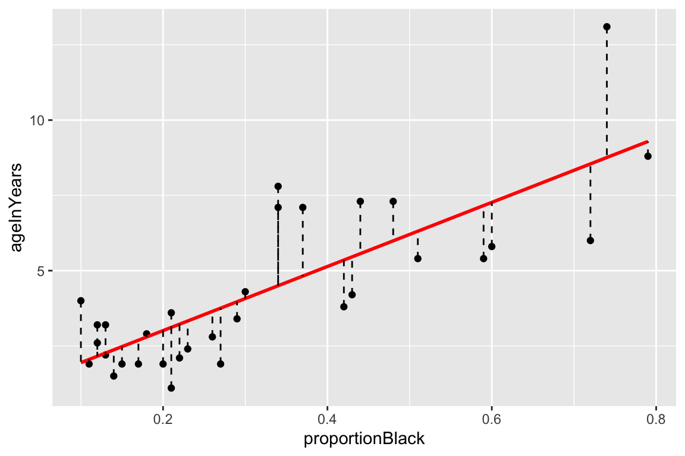
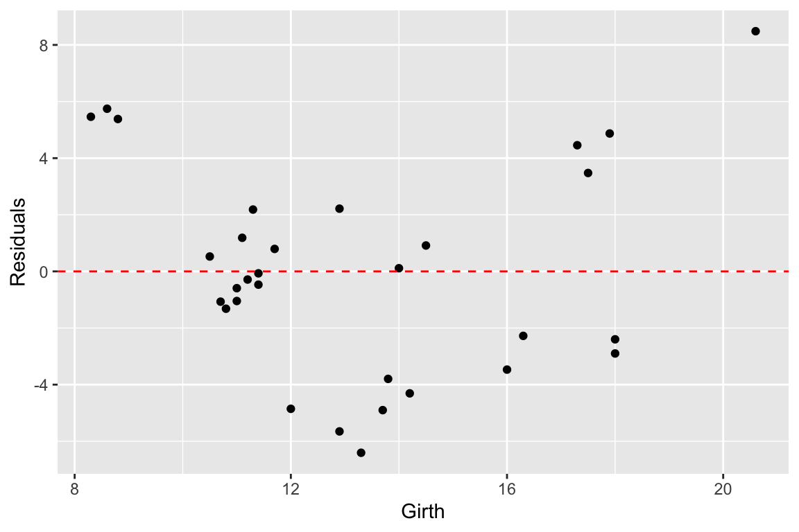
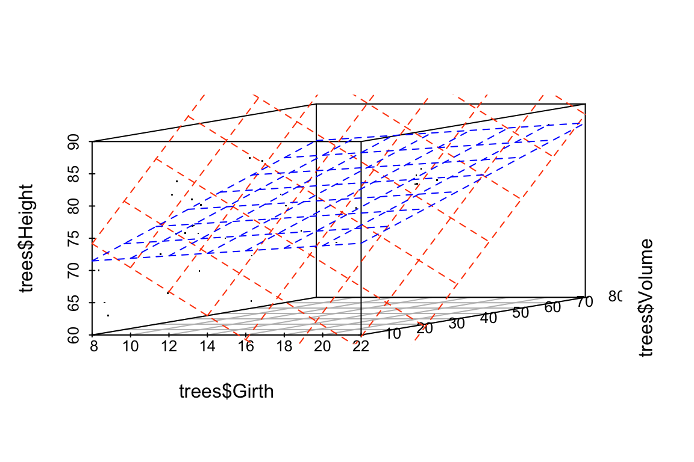
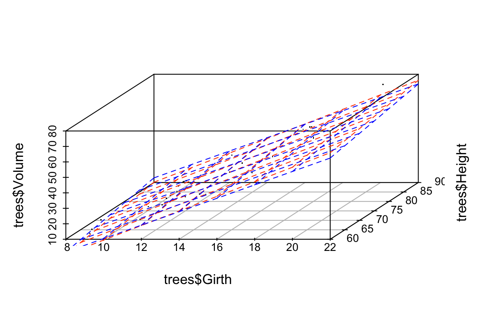
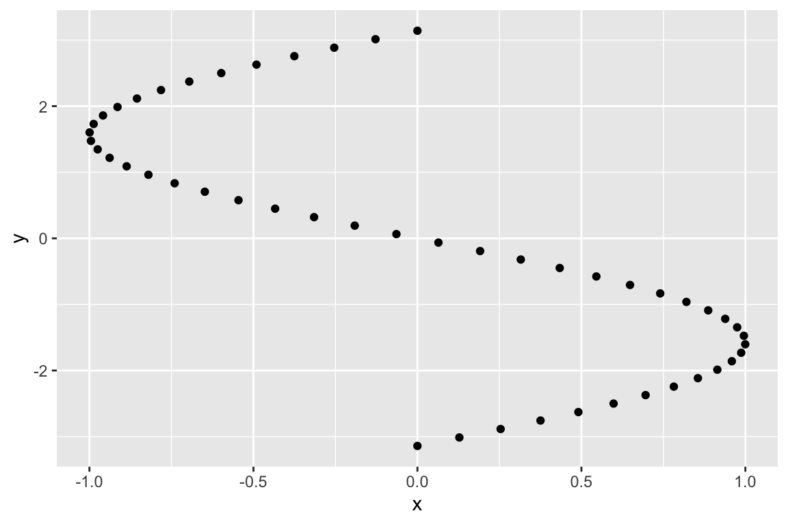

Chapter 12 Multiple Regression
12.1 Review of bivariate regression
Recall the model for bivariate least-squares regression. When we regress \(Y\) and \(X\) we’re looking for a linear function, \(f(X)\), for which the following sum-of-squared deviations is minimized:
\[ \sum_{i=1}^n (y_i - f(x_i))^2 \]
The general form a linear function of one variable is a line,
\[ \widehat{Y} = f(x) = a + bX \]
where \(b\) is the slope of the line and \(a\) is the intercept.
12.2 Multiple regression
The idea behind multiple regression is almost exactly the same as bivariate regression, except now we try and fit a linear model for \(Y\) using multiple explanatory variables, \(X_1, X_2,\ldots, X_m\). That is we’re looking for a linear function, \(f(X_1, X_2,\ldots,X_m)\) that minimizes:
\[ \sum_{i=1}^n(y_i - f(x_1, x_2,\ldots, x_m))^2 \]
A linear function of more than one variable is written as:
\[ \widehat{Y} = f(X_1, X_2,\ldots,X_m) = a + b_1X_1 + b_2X_2 + \cdots + b_mX_m \]
Where \(a\) is the intercept and \(b_1, b_2,\ldots,b_m\) are the regression coefficients.
12.2.1 Variable space interpretation
Geometrically the regression coefficients have the same interpretation as in the bivariate case – slopes with respect to the corresponding variable. When there are two predictor variables, the linear regression is geometrically a plane in 3-space, as shown in the figure below. When there are more than two predictor variables, the regression solution is a hyper-plane.

Multiple regression, two predictor variables
12.3 Subject space representation
The subject space (vector geometric) representation of multiple regression is shown below:

Figure 12.1: A vector representation of multiple regression.
As was the case for bivariate regression, multiple regression is simply a projection operation.
12.3.1 Coefficient of determination for multiple regression
As in bivariate regression, the coefficient of determination (\(R^2\)) provides a measure of the proportion of variance in the outcome variable (\(Y\)) “explained” by the predictor variables (\(X_1, X_2, \ldots\)).
12.4 Interpretting Multiple Regression
Here are some things to keep in mind when interpretting a multple regression:
In most cases of regression, causal interpretation of the model is not justified.
Standard bivariate and multiple regression assumes that the predictor variables ( (\(X_1, X_2, \ldots\)) are observed without error. That is, uncertainty in the regression model is only associated with the outcome variable, not the predictors.
Comparing the size of regression coefficients only makes sense if all the predictor (explanatory) variables have the same scale
If the explanatory variables (\(X_1, X_2,\ldots,X_m\)) are highly correlated, then the regression solution can be “unstable” – a small change in the data could lead to a large change in the regression model.
12.5 New Libraries to install
We’ll be using several new packages for this class session. Install the following packages via one of the standard install mechanisms:
scatterplot3drgl– NOTE: On OS X,rglrequires you to install a program called XQuartz. XQuartz can be downloaded from the XQuartz Home Page. If you’re on a Mac, install XQuartz before installingrgl. You may have to reboot your computer after installing XQuartz.
12.6 Libraries
library(tidyverse)
library(broom) # for working w/lm output12.7 Examplar data
To illustrate multiple regression in R we’ll use a built in dataset called trees. trees consists of measurements of the girth, height, and volume of 31 black cherry trees (?trees for more info).
Let’s assume we’re lumberjacks, but our permit only allows us to harvest a fixed number of trees. We get paid by the total volume of wood we harvest, so we’re interested in predicting a tree’s volume (hard to measure directly) as a function of its girth and height (relatively easy to measure), so we can pick the best trees to harvest. We’ll therefore calculate a multiple regression of volume on height and width.
12.8 Data exploration
We’ll start with some summary tables and diagnostic plots to familiarize ourselves with the data:
names(trees)
## [1] "Girth" "Height" "Volume"
dim(trees)
## [1] 31 3
summary(trees)
## Girth Height Volume
## Min. : 8.30 Min. :63 Min. :10.20
## 1st Qu.:11.05 1st Qu.:72 1st Qu.:19.40
## Median :12.90 Median :76 Median :24.20
## Mean :13.25 Mean :76 Mean :30.17
## 3rd Qu.:15.25 3rd Qu.:80 3rd Qu.:37.30
## Max. :20.60 Max. :87 Max. :77.00We’ll use the GGally::ggpairs() function introduced in problem set 01 to create a scatterplot matrix depicting the pairwise relationships between all the variables
library(GGally)
ggpairs(trees)As one might expect for morphological measurements related to size, the scatterplot matrix shows that all the variables are positively correlated, and girth and volume have a particularly strong correlation.
12.9 3D Plots
ggplot has no built in facilities for 3D scatter plots so we’ll use two new packages, scatterplot3D and rgl, to generate 3D visualizations.
12.9.1 scatterplot3d
library(scatterplot3d) # install this package first if needed
scatterplot3d(trees,
main = 'Tree Volume as\na function of Girth and Height')
The argument pch sets the type of plotting character to use in the plot (for a graphical key of the available plotting characters see this link) and color sets plotting character colors. We can change the angle of the 3D plot using the angle argument:
scatterplot3d(trees,
pch = 16, color="steelblue",
angle=75,
main = 'Tree Volume as\na function of Girth and Height')
We can add vertical lines to the plot using the type argument and remove the box around the plot:
scatterplot3d(trees,
pch = 16,
color="steelblue",
angle=75,
box = FALSE,
type = "h",
main = 'Tree Volume as\na function of Girth and Height')
For more examples of how you can modify plots generated with the scatterplot3d package see this web page).
12.9.2 rgl
The package rgl is another package that we can use for 3D visualization. rgl is powerful because it lets us create interactive plots we can rotate and zoom in/out on.
You can then create an interactive 3D plot as so:
library(rgl)
# create 3D scatter, using spheres to draw points
plot3d(trees$Girth, trees$Height, trees$Volume,
xlab = "Girth", ylab = "Height", zlab = "Volume",
type = "s",
size = 1.5,
col = "red")
rglwidget() # only need to include this line if using in a markdown document12.10 Fitting the regression model
From the 3D scatter plot it looks like we ought to be able to find a plane through the data that fits the scatter fairly well.
Let’s use the lm() function to calculate the multiple regression and summary() to get the details of the model:
fit.trees <- lm(Volume ~ Girth + Height, data=trees)
summary(fit.trees)
##
## Call:
## lm(formula = Volume ~ Girth + Height, data = trees)
##
## Residuals:
## Min 1Q Median 3Q Max
## -6.4065 -2.6493 -0.2876 2.2003 8.4847
##
## Coefficients:
## Estimate Std. Error t value Pr(>|t|)
## (Intercept) -57.9877 8.6382 -6.713 2.75e-07 ***
## Girth 4.7082 0.2643 17.816 < 2e-16 ***
## Height 0.3393 0.1302 2.607 0.0145 *
## ---
## Signif. codes: 0 '***' 0.001 '**' 0.01 '*' 0.05 '.' 0.1 ' ' 1
##
## Residual standard error: 3.882 on 28 degrees of freedom
## Multiple R-squared: 0.948, Adjusted R-squared: 0.9442
## F-statistic: 255 on 2 and 28 DF, p-value: < 2.2e-1612.10.1 Visualizing the regression model in scatterplot3d
To visualize the multiple regression, let’s use the scatterplot3d package to draw the 3D scatter of plots and the plane that corresponds to the regression model:
p <- scatterplot3d(trees, angle=55,type='h',
pch = 16, color = "steelblue",
main = 'Tree Volume as\na function of Girth and Height')
# add a plane representing the fit of the model
p$plane3d(fit.trees, col='orangered')
If instead of scatterplot3d, we wanted to use rgl to depict the model fit we can use the rgl.planes function as shown below.
coefs <- coef(fit.trees)
b1 <- coefs["Girth"]
b2 <- coefs["Height"]
c <- -1
a <- coefs["(Intercept)"]
plot3d(trees$Girth, trees$Height, trees$Volume,
xlab = "Girth", ylab = "Height", zlab = "Volume",
type = "s",
size = 1.5,
col = "red")
rgl.planes(b1, b2, c, a, alpha = 0.9, color = "gray")
rglwidget()From the figures it looks like the regression model fits pretty well, as we anticipated from the pairwise relationships.
12.11 Interpretting the regression model
The regression equation is: \(\hat{y}\) = + \(x_1\) +\(x_2\), where \(y\) is Volume, and \(x_1\) and \(x_2\) are Girth and Height respectively. Since they’re on different scales the coefficients for Girth and Height aren’t directly comparable. Both coefficients are significant at the \(p<0.05\) level, but note that Girth is the much stronger predictor. In fact the addition of height explains only a minor additional fraction of variation in tree volume, so from the lumberjack’s perspective the additional trouble of measuring height probably isn’t worth it.
12.12 Exploring the Vector Geometry of the Regression Model
The object returned by the lm() function hold lots of useful information:
names(fit.trees)
## [1] "coefficients" "residuals" "effects" "rank"
## [5] "fitted.values" "assign" "qr" "df.residual"
## [9] "xlevels" "call" "terms" "model"The fitted.values correspond to the predicted values of the outcome variable (\(\hat{y}\)). Alternate we can get this information in useful table form using functions from the broom library:
Recall the broom:tidy produces a tabular summary of the coefficients of the model and their associated statistics:
broom::tidy(fit.trees)
## # A tibble: 3 x 5
## term estimate std.error statistic p.value
## <chr> <dbl> <dbl> <dbl> <dbl>
## 1 (Intercept) -57.99 8.638 -6.713 2.750e- 7
## 2 Girth 4.708 0.2643 17.82 8.223e-17
## 3 Height 0.3393 0.1302 2.607 1.449e- 2broom:glance provides information about the fit of the model:
broom::glance(fit.trees)
## # A tibble: 1 x 11
## r.squared adj.r.squared sigma statistic p.value df logLik AIC
## <dbl> <dbl> <dbl> <dbl> <dbl> <int> <dbl> <dbl>
## 1 0.9480 0.9442 3.882 255.0 1.071e-18 3 -84.45 176.9
## # … with 3 more variables: BIC <dbl>, deviance <dbl>, df.residual <int>Let’s use our knowledge of vector geometry to further explore the relationship between the predicted Volume and the predictor variables. By definition the vector representing the predicted values lies in the subspace (in this case a plane) defined by Height and Girth, so let’s do some simple calculations to understand their length and angular relationships:
# proportional to length of vectors
sd(fit.trees$fitted.values)
## [1] 16.00434
sd(trees$Height)
## [1] 6.371813
sd(trees$Girth)
## [1] 3.138139
# cosines of angles btw vectors
cor(trees$Height, trees$Girth)
## [1] 0.5192801
cor(trees$Girth, fit.trees$fitted.values)
## [1] 0.9933158
cor(trees$Height, fit.trees$fitted.values)
## [1] 0.6144545
# angles btw vectors in degrees
acos(cor(trees$Girth, trees$Height)) * (180/pi)
## [1] 58.71603
acos(cor(trees$Girth, fit.trees$fitted.values)) * (180/pi)
## [1] 6.628322
acos(cor(trees$Height, fit.trees$fitted.values)) * (180/pi)
## [1] 52.0877112.13 Exploring the Residuals from the Model Fit
Now let’s look at the residuals from the regression. The residuals represent the `unexplained’ variance:
trees.augmented <- augment(fit.trees, trees)
ggplot(trees.augmented, aes(x = Girth, y = .resid)) +
geom_point() +
geom_hline(yintercept = 0, color='red', linetype='dashed') +
labs(x = "Girth", y = "Residuals")
Ideally the residuals should be evenly scattered around zero, with no trends as we go from high to low values of the dependent variable. As you can see, the residuals are somewhat u-shaped or j-shaped suggesting that there may be a non-linear aspect of the relationship that our model isn’t capturing.
12.14 An alternate model
Let’s think about the relationships we’re actually modeling for a few minutes. For the sake of simplicity let’s consider the trunk of a tree to be a cylinder. How do the dimensions of this cylinder relate to its volume? You can look up the formula for the volume of a cylinder, but the key thing you’ll want to note is that volume of the cylinder should be proportional to a characteristic length of the cylinder cubed (\(V \propto \mathrm{L}^3\)). This suggests that if we want to fit a linear model we should relate Girth and Height to \(\sqrt[3]{\mathrm{Volume}}\):
trees.cuberoot <- mutate(trees, cuberoot.Volume = Volume^0.33)
fit.trees.cuberoot <- lm(cuberoot.Volume ~ Girth + Height, data = trees.cuberoot)
broom::glance(fit.trees) # summary of fit of original model
## # A tibble: 1 x 11
## r.squared adj.r.squared sigma statistic p.value df logLik AIC
## <dbl> <dbl> <dbl> <dbl> <dbl> <int> <dbl> <dbl>
## 1 0.9480 0.9442 3.882 255.0 1.071e-18 3 -84.45 176.9
## # … with 3 more variables: BIC <dbl>, deviance <dbl>, df.residual <int>
broom::glance(fit.trees.cuberoot) # summary of fit of alternate model
## # A tibble: 1 x 11
## r.squared adj.r.squared sigma statistic p.value df logLik AIC
## <dbl> <dbl> <dbl> <dbl> <dbl> <int> <dbl> <dbl>
## 1 0.9776 0.9761 0.08108 612.4 7.768e-24 3 35.47 -62.94
## # … with 3 more variables: BIC <dbl>, deviance <dbl>, df.residual <int>Comparing the summary tables, we see indeed that using the cube root of Volume improves the fit of our model some. Let’s examine the residuals of this alternate model.
trees.cuberoot <- broom::augment(fit.trees.cuberoot, trees.cuberoot)
ggplot(trees.cuberoot, aes(x = cuberoot.Volume, y = .resid)) +
geom_point() +
geom_hline(yintercept = 0, color='red', linetype='dashed') +
labs(x = "Girth", y = "Residuals")
As we can see the transformation we applied to the data did seem to make our residuals more uniform across the range of observations.
12.15 Fitting a curvilinear model using lm()
Above we transformed the volume data in order to fit a straight line relationship between \(\sqrt[3]{V}\) and Girth and Hieght. However, we could just as easily have applied a cubic regression to the original variables (remember this is still linear in the coefficients). Since Height didn’t add much to additional information, we’ll simplify the model to consider only Girth.
fit.curvilinear <- lm(Volume ~ I(Girth^3), data=trees)
broom::tidy(fit.curvilinear)
## # A tibble: 2 x 5
## term estimate std.error statistic p.value
## <chr> <dbl> <dbl> <dbl> <dbl>
## 1 (Intercept) 8.043 1.043 7.714 1.663e- 8
## 2 I(Girth^3) 0.008137 0.0003118 26.10 1.087e-21
broom::glance(fit.curvilinear)
## # A tibble: 1 x 11
## r.squared adj.r.squared sigma statistic p.value df logLik AIC
## <dbl> <dbl> <dbl> <dbl> <dbl> <int> <dbl> <dbl>
## 1 0.9592 0.9578 3.379 681.1 1.087e-21 2 -80.70 167.4
## # … with 3 more variables: BIC <dbl>, deviance <dbl>, df.residual <int>Here’s how we can visualize the corresponding curvilinear regression using ggplot:
ggplot(trees, aes(x = Girth, y = Volume)) +
geom_point() +
geom_smooth(method = "lm",
formula = y ~ I(x^3),
se = FALSE)The I() function used above requires a little explanation. Normally, the R formula syntax (see ?formula) treats the carat symbol, ^, as short-hand for factor crossing to the specified degree. For example, the formula (a+b+c)^2 would be interpretted as the model with main effects and all second order interaction terms, i.e. a + b + c + a:b + a:c + b:c where the colons indicate interactions. The I() function `protects’ the object in it’s argument; in this case telling the regression function to treat this as Girth raised to the third power as opposed to trying to construct interaction terms for Girth.
12.16 Exploring the impact of nearly collinear predictors on regression
In lecture we discussed the problems that can arise in regression when your predictor variables are nearly collinear. In this section we’ll illustrate some of these issues.
Consider again the trees data set. Recall that two of the variables – Girth and Volume – are highly correlated and thus nearly collinear.
cor(trees)
## Girth Height Volume
## Girth 1.0000000 0.5192801 0.9671194
## Height 0.5192801 1.0000000 0.5982497
## Volume 0.9671194 0.5982497 1.0000000Let’s explore what happens when we treat Height as the dependent variable, and Girth and Volume as the predictor variables.
fit.Height <- lm(Height ~ Girth + Volume, data = trees)
broom::glance(fit.Height)
## # A tibble: 1 x 11
## r.squared adj.r.squared sigma statistic p.value df logLik AIC BIC
## <dbl> <dbl> <dbl> <dbl> <dbl> <int> <dbl> <dbl> <dbl>
## 1 0.4123 0.3703 5.056 9.820 5.868e-4 3 -92.65 193.3 199.0
## # … with 2 more variables: deviance <dbl>, df.residual <int>We can, of course, fit the linear model despite the near collinearity, and we find that the model does have some predictive power, with \(R^2 = 0.41\), and with Volume being the more significant predictor.
Now, let’s created a slightly different version of the trees data set by add some noise to the three variables. Our goal here is to simulate a data set we might have created had we measured a slightly different set of trees during our sampling. We’ll use the jitter() function to add uniform noise to the data set.
jitter.Girth <- jitter(trees$Girth, amount= 0.5 * sd(trees$Girth))
jitter.Height <- jitter(trees$Height, amount= 0.5 * sd(trees$Height))
jitter.Volume <- jitter(trees$Volume, amount= 0.5 * sd(trees$Volume))
jitter.trees <- data.frame(Girth = jitter.Girth,
Height = jitter.Height,
Volume = jitter.Volume)Here we added uniform noise proportional to the one-quarter the standard deviation of each variable. Let’s take a moment to convince ourselves that our new data set, jitter.trees, is not too different from the trees data set from which it was derived.
set.seed(20190227)
# compare this to broom::tidy(trees)
broom::tidy(jitter.trees)
## # A tibble: 3 x 13
## column n mean sd median trimmed mad min max range skew
## <chr> <dbl> <dbl> <dbl> <dbl> <dbl> <dbl> <dbl> <dbl> <dbl> <dbl>
## 1 Girth 31 13.21 3.186 12.27 12.97 1.959 7.817 21.08 13.27 0.6754
## 2 Height 31 76.23 6.785 77.59 76.63 4.560 62.23 87.23 24.99 -0.4336
## 3 Volume 31 30.34 15.79 28.95 29.10 9.266 4.644 72.70 68.05 0.8033
## # … with 2 more variables: kurtosis <dbl>, se <dbl>
# correlations among jittered variables are
# similar to those of the original variables
cor(jitter.trees)
## Girth Height Volume
## Girth 1.0000000 0.5826720 0.9073956
## Height 0.5826720 1.0000000 0.4454657
## Volume 0.9073956 0.4454657 1.0000000
## jittered variables are highly correlatd with original variables
cor(trees$Height, jitter.trees$Height)
## [1] 0.9625816
cor(trees$Girth, jitter.trees$Girth)
## [1] 0.9526394
cor(trees$Volume, jitter.trees$Volume)
## [1] 0.9403697Now that we’ve convinced ourselves that our jittered data set is a decent approximation to our original data set, let’s re-calculate the linear regression, and compare the coefficients of the jittered model to the original model:
fit.Height.jitter <- lm(Height ~ Girth + Volume, data = jitter.trees)
broom::tidy(fit.Height)
## # A tibble: 3 x 5
## term estimate std.error statistic p.value
## <chr> <dbl> <dbl> <dbl> <dbl>
## 1 (Intercept) 83.30 9.087 9.167 6.333e-10
## 2 Girth -1.862 1.157 -1.609 1.188e- 1
## 3 Volume 0.5756 0.2208 2.607 1.449e- 2
broom::tidy(fit.Height.jitter)
## # A tibble: 3 x 5
## term estimate std.error statistic p.value
## <chr> <dbl> <dbl> <dbl> <dbl>
## 1 (Intercept) 53.95 6.174 8.738 1.731e-9
## 2 Girth 2.152 0.7548 2.851 8.100e-3
## 3 Volume -0.2025 0.1523 -1.330 1.943e-1We see that the coefficients of the linear model have changed substantially between the original data and the jittered data. Our model is unstable to relatively modest changes to the data!
Let’s draw some plots to illustrate how different the models fit to the original and jittered data are:
# draw 3d scatter plots with small points so as not to obscure regression planes
p <- scatterplot3d(x=trees$Girth, y=trees$Volume, z=trees$Height,
angle=15, type='p', pch='.')
# original model
p$plane3d(fit.Height, col='orangered')
# jittered model
p$plane3d(fit.Height.jitter, col='blue')
Let’s do the same comparison for the multiple regression of Volume on Height and Girth. In this case the predictor variables are nearly collinear.
fit.Volume <- lm(Volume ~ Girth + Height, data = trees)
fit.Volume.jitter <- lm(Volume ~ Girth + Height, data = jitter.trees)
coefficients(fit.Volume)
## (Intercept) Girth Height
## -57.9876589 4.7081605 0.3392512
coefficients(fit.Volume.jitter)
## (Intercept) Girth Height
## -11.5034008 4.8613703 -0.2933129For this model, we see that the coefficients have changed only a small amount. The underlying data, jitter.trees, is the same in both cases, but now our model is stable because the predictor variables are only modestly correlated with each other.
Let’s generate another plot to illustrate the similarity of the models fit to the original and jittered data when Girth and Height are used to predict Volume.
p <- scatterplot3d(x=trees$Girth, y=trees$Height, z=trees$Volume,
angle=55, type='p', pch='.')
p$plane3d(fit.Volume, col='orangered')
p$plane3d(fit.Volume.jitter, col='blue')Finally, let’s do some vector calculations to quantify how the angular deviation between the fit data and the predictor variables changes between the original and jittered data set for the two different multiple regressions:
# write a quickie fxn to express angle between vectors in degrees
vec.angle <- function(x,y) { acos(cor(x,y)) * (180/pi)}
# vector angles for fit of Height ~ Girth + Volume (orig)
vec.angle(fit.Height$fitted.values, trees$Girth)
## [1] 36.02644
vec.angle(fit.Height$fitted.values, trees$Volume)
## [1] 21.29297
# vector angles for fit of Height ~ Girth + Volume (jittered)
vec.angle(fit.Height.jitter$fitted.values, jitter.trees$Girth)
## [1] 18.77548
vec.angle(fit.Height.jitter$fitted.values, jitter.trees$Volume)
## [1] 43.62758Now the same comparison for the non-collinear model Volume ~ Girth + Height.
# vector angles for fit of Volume ~ Girth + Height (orig)
vec.angle(fit.Volume$fitted.values, trees$Girth)
## [1] 6.628322
vec.angle(fit.Volume$fitted.values, trees$Height)
## [1] 52.08771
# vector angles for fit of Volume ~ Girth + Height (jittered)
vec.angle(fit.Volume.jitter$fitted.values, jitter.trees$Girth)
## [1] 6.440693
vec.angle(fit.Volume.jitter$fitted.values, jitter.trees$Height)
## [1] 60.80199As these calculation illustrate, the change in the regression plane in the jittered date is much smaller when the dependent variable are not nearly colinear.
12.17 LOESS Models
LOESS (aka LOWESS; ‘Locally weighted scatterplot smoothing’) is a modeling technique that fits a curve (or surface) to a set of data using a large number of local linear regressions. Local weighted regressions are fit at numerous regions across the data range, using a weighting function that drops off as you move away from the center of the fitting region (hence the "local aspect). LOESS combines the simplicity of least squares fitting with the flexibility of non-linear techniques and doesn’t require the user to specify a functional form ahead of time in order to fit the model. It does however require relatively dense sampling in order to produce robust fits.
Formally, at each point \(x_i\) we estimate the regression coefficients \(\hat{\beta}_j(x)\) as the values that minimize: \[ \sum_{k=1}^n w_k(x_i)(y_k - \beta_0 - \beta_1 x_k - \ldots - \beta_d x_k^2)^2 \] where \(d\) is the degree of the polynomial (usually 1 or 2) and \(w_k\) is a weight function. The most common choice of weighting function is called the “tri-cube” function as is defined as:
\[\begin{align*} w_k(x_i) &= (1-|x_i|^3)^3, \mbox{for}\ |x_i| \lt 1 \\ &= 0, \mbox{for}\ |x_i| \geq 1 \end{align*}\] where \(|x_i|\) is the normalized distance (as determined by the span parameter of the LOESS model) of the observation \(x_i\) from the focal observation \(x_k\).
The primary parameter that a user must decide on when using LOESS is the size of the neighborhood function to apply (i.e. over what distance should the weight function drop to zero). This is referred to as the “span” in the R documentation, or as the parameter \(\alpha\) in many of the papers that discuss LOESS. The appropriate span can be determined by experimentation or, more rigorously by cross-validation.
We’ll illustrate fitting a Loess model using data on Barack Obama’s approval ratings over the period from 2008 to 2001 (obama-polls.txt).
polls <- read_delim('https://github.com/Bio723-class/example-datasets/raw/master/obama-polls-2008-2011.txt',
delim="\t", trim_ws=TRUE)
# note that we needed to use "trim_ws" above because there were
# some lurking spaces in the fields of that tab delimited data file
head(polls)
## # A tibble: 6 x 6
## Pollster Dates `N/Pop` Approve Disapprove Undecided
## <chr> <chr> <chr> <dbl> <dbl> <chr>
## 1 Rasmussen 9/17-19/11 1500 LV 46 52 -
## 2 Rasmussen 9/14-16/11 1500 LV 45 55 -
## 3 Gallup 9/13-15/11 1500 A 39 52 -
## 4 CBS/Times 9/10-15/11 1452 A 43 50 7
## 5 Marist/McClatchy 9/13-14/11 825 RV 39 52 9
## 6 Rasmussen 9/11-13/11 1500 LV 45 54 -Notice that the Dates column is not very tidy. Each “date” is actually a range of dates of the form Month/DayStart-DayEnd/Year (e.g. “9/1/09” is September 01, 2009). Even nastier, some dates are in the form Month/Day/Year (only a single day) or MonthStart/DayStart-MonthEnd/DayEnd/Year (e.g. “2/26-3/1/11” is February 26,2011 to March 01, 2011) . Whoever formatted the data in this fashion must really hate tidy data! To deal with this nightmare we’re going to use the tidyr::extract() function to employ regular expressions (regex) to parse this complicated data field into it’s constituent parts. For more details on regular expression see the R Regular Expession Cheat Sheet and R for Data Science.
polls <-
polls %>%
# first separate left most and right most fields as month and year respectively
tidyr::extract("Dates", c("month", "day.range", "year"), regex="(\\d+)/(.+)/(\\d+$)", convert = TRUE) %>%
# now deal with the complicated middle field. For simplicities sake we're just
# going to focus on extracting the start day
tidyr::extract("day.range", c("day.start", "day.other"), regex = "(\\d+)(.+)", convert = TRUE) %>%
# finally convert YY to 20YY
mutate(year = 2000 + year)
head(polls)
## # A tibble: 6 x 9
## Pollster month day.start day.other year `N/Pop` Approve Disapprove
## <chr> <int> <int> <chr> <dbl> <chr> <dbl> <dbl>
## 1 Rasmuss… 9 17 -19 2011 1500 LV 46 52
## 2 Rasmuss… 9 14 -16 2011 1500 LV 45 55
## 3 Gallup 9 13 -15 2011 1500 A 39 52
## 4 CBS/Tim… 9 10 -15 2011 1452 A 43 50
## 5 Marist/… 9 13 -14 2011 825 RV 39 52
## 6 Rasmuss… 9 11 -13 2011 1500 LV 45 54
## # … with 1 more variable: Undecided <chr>For the next steps we’ll need the lubridate library (install if needed):
library(lubridate)
##
## Attaching package: 'lubridate'
## The following object is masked from 'package:base':
##
## date
polls <-
polls %>%
mutate(date = make_date(year = year, month=month, day = day.start))
head(polls)
## # A tibble: 6 x 10
## Pollster month day.start day.other year `N/Pop` Approve Disapprove
## <chr> <int> <int> <chr> <dbl> <chr> <dbl> <dbl>
## 1 Rasmuss… 9 17 -19 2011 1500 LV 46 52
## 2 Rasmuss… 9 14 -16 2011 1500 LV 45 55
## 3 Gallup 9 13 -15 2011 1500 A 39 52
## 4 CBS/Tim… 9 10 -15 2011 1452 A 43 50
## 5 Marist/… 9 13 -14 2011 825 RV 39 52
## 6 Rasmuss… 9 11 -13 2011 1500 LV 45 54
## # … with 2 more variables: Undecided <chr>, date <date>polls.plot <-
polls %>%
ggplot(aes(x = date, y = Approve)) +
geom_point(alpha=0.5, pch=1) +
labs(x = "Date", y = "Approval Rating",
title = "Barack Obama's Approval Ratings, 2008-2011")
polls.plot
We can fit the LOESS as so, and get back the predicted values using the predict() function:
loess.approval <- loess(Approve ~ as.numeric(date), data = polls)
loess.predicted.values <- predict(loess.approval)
head(loess.predicted.values)
## [1] 44.55653 44.59349 44.60572 44.64216 44.60572 44.63006Usually we’ll want to visualize the LOESS regression, which we can conveniently do with ggplot::geom_smooth without having to explicitly calculate the LOESS:
polls.plot +
geom_smooth(color='red', method="loess", se=FALSE)
Here’s the same data fit with a smaller span (the paramater that controls the “local neighborhood” size in LOESS):
polls.plot +
geom_smooth(color='red', method="loess", se=FALSE, span=0.1)
The high density of the polling justifies the smaller span, and the additional deviations apparent when the LOESS is fit with the smaller span likely reflect real world changes in approval, induced by a variety of political and other news events.
For example, we can zoom in on 2011:
polls.plot +
geom_smooth(color='red', method="loess", se=FALSE, span=0.1) +
coord_cartesian(xlim=c(ymd(20110101), ymd(20110901)), ylim=c(35,65)) +
scale_x_date(date_breaks="1 month", date_label="%B") +
labs(title="Barack Obama's Approval Ratings, Jan - Sep 2011")
Increased approval ratings in January coincide with the approval of a tax deal and a speech to the nation following the shooting of congresswoman Gabbie Giffords in Tuscson, AZ (https://www.cnbc.com/id/41139968). The spike apparent in early May coincides with the death of Osama Bin Laden. You might take a look at major policitcal events in otehr years to see if you can identify drivers behind other approval rating shifts.